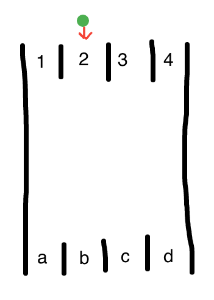
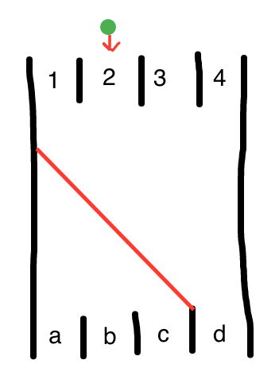
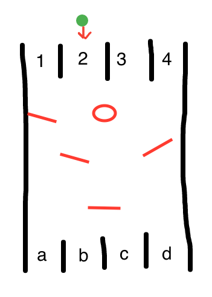
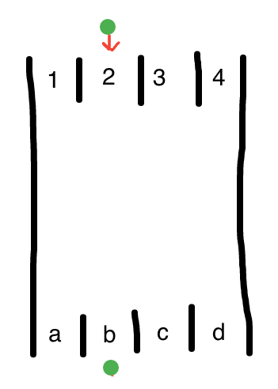
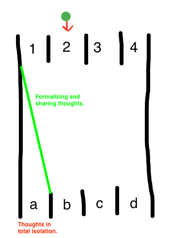

Suppose you have this system.

The properties of this system are:
- The green ball has a downward force acting upon it.
- Input: the starting slot (1-4)
- Output: the ending slot (a-d)
- You have no idea what happens in the middle.
The middle might look like this:

Or like this

The point is, you can not see what is happening in the middle and you only get to pick an input and be given an output.
Example: 2 maps to B. Remember, we don't know why.

Think of this as a highly simplified game of life. There are things that we have control over (inputs) and there are areas that we not only do not have direct control over but also can not see or understand the properties of (context). Choosing the inputs and applying the context gets us "somewhere" or (the output).
I believe it is very easy to spend too much time focusing on inputs and the outputs we expect, without giving enough thought to the context.
For me, the context of my thoughts and ideas has mostly been an internal conversation. Me thinking about things in isolation. This is a bad thing. Without forcing myself to formalize and be comfortable sharing ideas, it is too easy to let the wrong ideas take hold. This is why I'm blogging. To change the context of my thoughts. From my head to on paper (the internet). As an added benefit, I can practice writing.
While I believe the process of modifying context can be very difficult to predict the result of. I believe that my discussion here will, at least, result in the following modification of my context.
